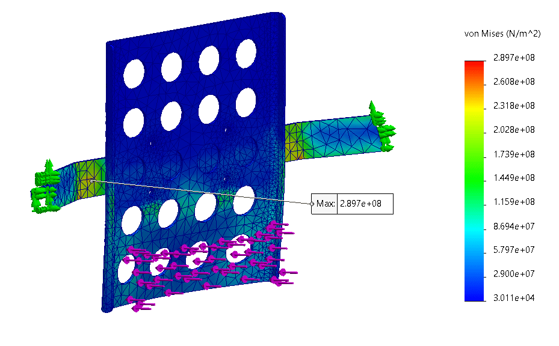
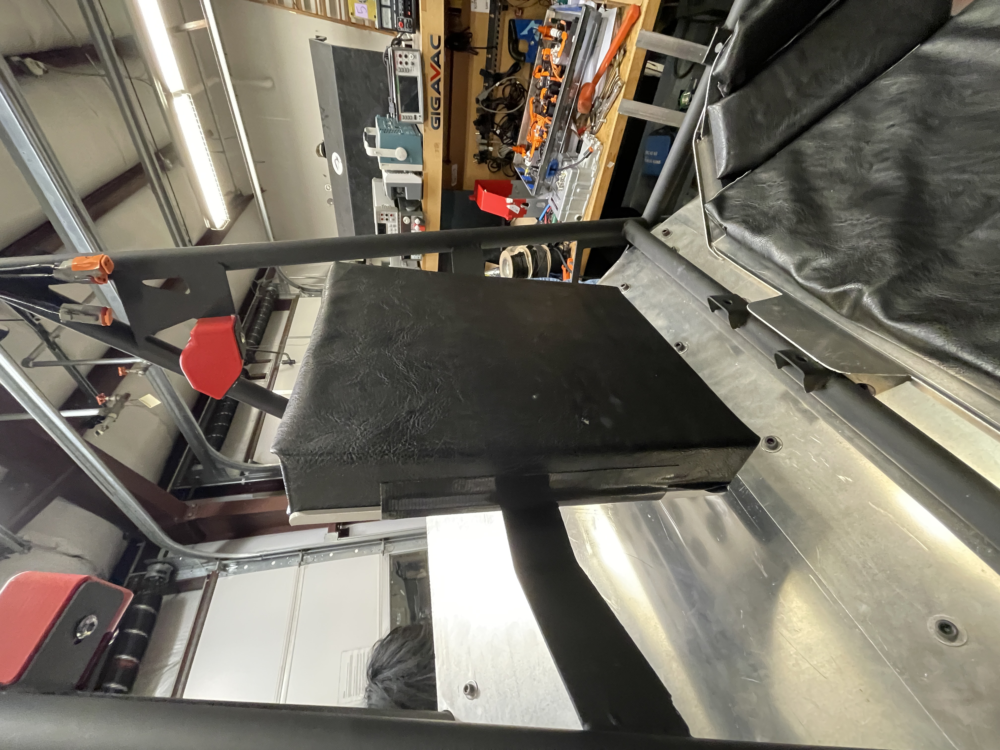

Formula SAE Head Restraint
Designed a rule-compliant head restraint for a Formula SAE vehicle. The work combined cockpit packaging, driver safety requirements, hand calculations, CAD, and FEA to move the design from concept to on-car integration.

CAD model of the head restraint structure and mounting concept within the cockpit.
Overview
This project focused on designing a head restraint for our Formula SAE vehicle as part of the driver safety system. The restraint had to limit rearward head motion while fitting within the available cockpit space and complying with Formula SAE requirements for driver positioning, energy-absorbing padding, and structural performance.
Rather than being a simple support bracket, this was a requirement-driven mechanical design problem. The final structure had to work as part of the full vehicle, which meant balancing safety rules, mounting strategy, manufacturability, stiffness, and integration with the surrounding cockpit geometry.
Images

FEA used to evaluate structural response and guide refinement under required loading conditions.

Installed head restraint showing final fit and integration on the vehicle.
My Contributions
- Translated Formula SAE rules and safety requirements into a manufacturable head restraint design for the vehicle cockpit.
- Developed the CAD geometry and mounting concept to satisfy helmet positioning, foam placement, and cockpit packaging constraints.
- Performed hand calculations and FEA to evaluate structural behavior under required loading conditions.
- Iterated on the design based on design review feedback, stiffness considerations, fabrication practicality, and chassis integration.
- Delivered a final design that was installed on the car for competition use.
Technical Highlights
A major part of the project was converting Formula SAE safety rules into a real physical design. The head restraint had to be positioned correctly relative to the driver’s helmet, support compliant padding geometry, and remain within the allowable space while still fitting the actual cockpit and driver envelope.
I developed the structure in CAD and used both hand calculations and finite element analysis to validate the design. The hand calculations helped establish first-pass structural expectations, while the FEA provided a more detailed view of stress distribution and deformation under the required load cases. Using both approaches made it easier to judge whether the design was reasonable before committing to the final version.
The project also required attention to manufacturability and mounting. A design that works in analysis is not automatically a good design if it is difficult to fabricate, awkward to install, or poorly matched to the chassis. I iterated on the geometry and attachment approach so the restraint would be practical to build and integrate without compromising its safety function.
Design Constraints
The restraint had to satisfy several constraints at the same time: required load resistance, correct location relative to the driver, sufficient support for the foam interface, and compatibility with the limited space available in the cockpit. These constraints made the design a multi-factor engineering problem rather than a single strength calculation.
I also had to consider how the structure would behave as part of the complete vehicle. That included geometry, stiffness, local stress behavior, mounting details, and how the restraint would interact with adjacent cockpit components once installed.
Challenges
One challenge was balancing structural performance with manufacturability and packaging. A stiffer or stronger design is not always better if it becomes too heavy, too difficult to fabricate, or too intrusive within the cockpit. The best solution had to satisfy the safety function while remaining realistic for the team to build and use.
Another challenge was validating the design with enough confidence to move from concept to implementation. Using both hand calculations and FEA helped me compare different ways of reasoning about the structure, identify where refinements were needed, and avoid relying on only one type of analysis before installation.
Tools and Skills
Tools: CAD, FEA, Hand Calculations
Skills: Structural Design, Requirement-Driven Design, Mechanical Integration, Safety-Constrained Design, Design Validation, Design Iteration
Project Status
This project was completed during my first year and integrated into the car for competition. The final design progressed from requirements and concept development through structural validation, refinement, fabrication planning, and on-car installation.